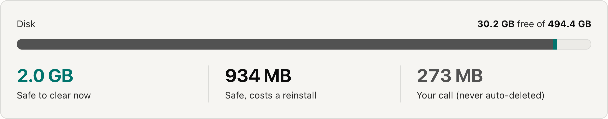
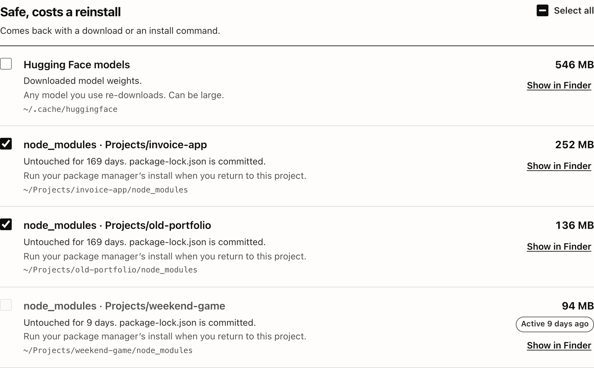
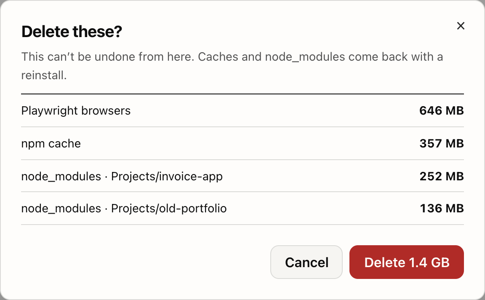

Scan
Press Scan. safe-sweep measures caches, leftovers and dormant projects.
safe-sweep finds caches, build leftovers and old node_modules on your machine. It sorts them by how safe they are to remove and shows real sizes. Nothing is deleted until you tick it and confirm.
npm install -g @d-beloved/safe-sweepsafe-sweepOr try it once without installing:
npx @d-beloved/safe-sweep
safe-sweep is a small page served from your own computer at 127.0.0.1:4777. There is no account, no sign-in, no network calls and no telemetry. This website only explains it. The tool itself never leaves your machine.
Three steps. Sizes are measured, not estimated.
Press Scan. safe-sweep measures caches, leftovers and dormant projects.

Tick what you want gone, one by one or with Select all on each list. Clear selection unticks everything.

Confirm. You see what each item freed and how much free space you really gained.

Every item lands in one of three lists, so you always know what a delete will cost you.
Caches and leftovers that rebuild themselves. Nothing of yours is lost.
Docker build cache, npm, yarn, pnpm, bun and uv caches, brew cleanup, browser and app caches.
Comes back with a download or an install command.
node_modules in projects idle for 60 days with a committed lockfile, Hugging Face models, Chrome’s on-device AI model.
Shown so you know where space went. Never deleted by safe-sweep.
Downloads, Trash, videos, old Node versions, installers, system package caches.
This tool deletes files, so the defaults lean hard towards saying no.
.git folder, chat data and cloud-synced folders are blocked, whatever else matches.docker image prune -a or docker volume prune.safe-sweep log to read it.127.0.0.1 with a Host check and a per-session token, so other websites can’t trigger a clean.The page does everything, but the terminal works too.
| Command | What it does |
|---|---|
| safe-sweep | Opens the page. Stops after 15 idle minutes. |
| safe-sweep scan | Prints the list in the terminal. Deletes nothing. |
| safe-sweep schedule weekly | Checks every week and notifies you if space is low. Never deletes. |
| safe-sweep log | Shows what was cleaned, when, and how much it freed. |